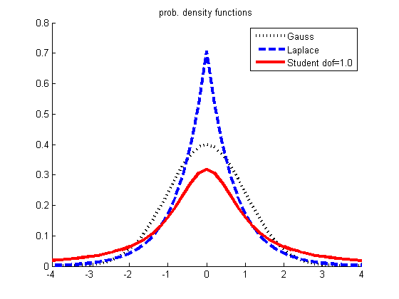
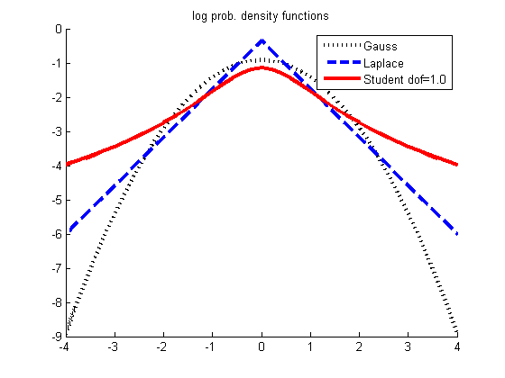

Compare Gauss, Student T, and Laplacian distributions
xs = -4:0.2:4;
v = 1;
mu = 0;
pr{1} = gaussProb(xs, mu, sqrt(v));
b = sqrt(v/2);
pr{2} = 1/(2*b)*exp(-abs(xs-mu)/b);
legendStr = {'Gauss', 'Laplace'};
dofs = [1];
for i=1:length(dofs)
nu = dofs(i);
model.mu = mu;
model.dof = nu;
if nu>2
sigma2 = v*(nu-2)/nu;
else
sigma2 = 1;
end
model.Sigma = sigma2;
pr{i+2} = exp(studentLogprob(model, xs));
legendStr{i+2} = sprintf('Student dof=%2.1f', nu);
end
styles = {'k:', 'b--', 'r-'};
figure; hold on
for i=1:length(pr)
plot(xs, pr{i}, styles{i}, 'linewidth',3, 'markersize', 10);
end
legend(legendStr)
printPmtkFigure('robustPdf')
title('prob. density functions')
figure; hold on
for i=1:length(pr)
plot(xs, log(pr{i}), styles{i}, 'linewidth', 3, 'markersize', 10);
end
legend(legendStr)
printPmtkFigure('robustLogpdf')
title('log prob. density functions')
 